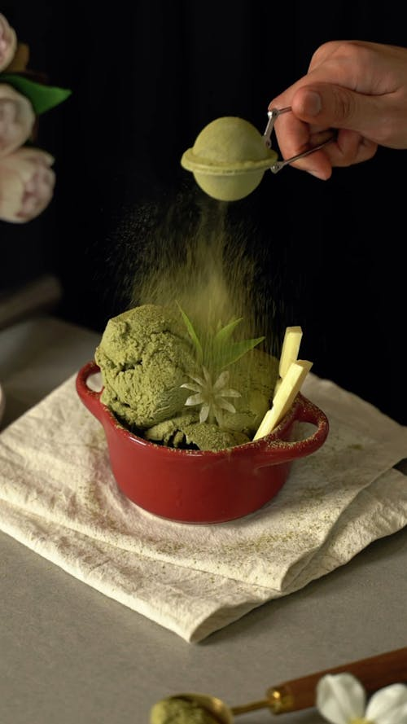

Back

Matcha Ice Cream
Description
Green Tea Flavored icecream based on the popular Japanese ceremonial tea.
Ingredients:
- 1 tablespoon matcha green tea powder, or more to taste
- 1 cup whole milk
- s heavy whipping cream
- 3/4 cup white sugar
- 2 large eggs
Steps:
- Gather all ingredients.
- Whisk matcha powder in a bowl to remove any lumps. Add a splash of milk and whisk until matcha powder is completely dissolved. Gradually whisk in remaining milk.
- Transfer matcha mixture to a pot. Add cream and cook over medium-low heat, stirring occasionally, until heated through, about 5 minutes.
- Whisk sugar and eggs together in a bowl. Pour 1/2 cup hot matcha mixture into egg mixture, whisking quickly until thoroughly combined. Repeat with remaining matcha mixture. Pour mixture back into the pot.
- Cook and stir matcha mixture over medium-low heat until heated through, about 3 minutes. Remove from the heat and cool to room temperature, about 20 minutes. Refrigerate until chilled, at least 2 hours.
- Pour chilled matcha mixture into an ice cream maker and freeze according to the manufacturer's instructions, about 20 minutes.
- Serve or transfer to an airtight container and freeze until desired consistency is reached.